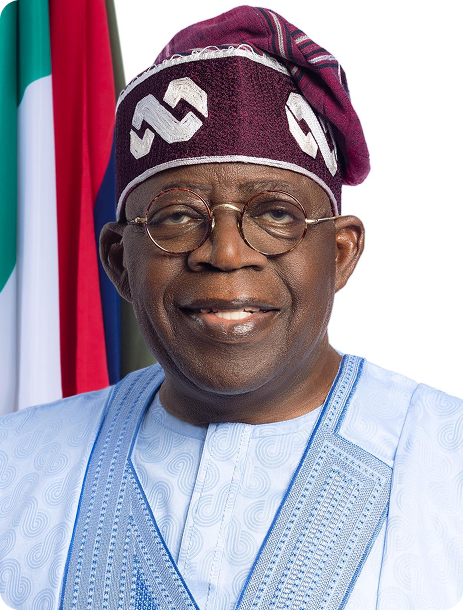

Vulnerable Nigerian's Reached
Families benefiting from social investment programs

 President Bola Ahmed Tinubu | A Promise Kept
President Bola Ahmed Tinubu | A Promise Kept
The All Progressives Congress (APC) won the 2023 elections with President Bola Ahmed Tinubu and Vice President Kashim Shettima flying the flag, giving our great party its third straight win at the polls since 2015.
This portal is dedicated to showcasing the accomplishment of the campaign promises of the president, which invariably are the promises of the ruling party.
The Tinubu led government has not only done well in the past few years but is putting Nigeria on the track to economic recovery with bold and audacious policies that successive governments can only wish.
While we account these achievements as progress in the right direction, the APC government is reassuring Nigerians that this is work in progress.

About The Initiative
Riding on his Renewed Hope Agenda mantra, and implementing untouchable policies, the president has done a feat that can be described as the boldest and most courageous in Nigeria's recent history, leading to the steady recovery of the Nigeria's economy that was at the verge of collapse.
View Commitments
About The Initiative
Professor Nentawe Goshwe Yilwatda is the National Chairman of the All Progressives Congress (APC), Nigeria's ruling political party.
As APC National Chairman, Prof. Yilwatda serves as the chief strategist and unifier of Nigeria's leading political party. He brings strategic clarity and youthful energy to the party, leading efforts to strengthen internal democracy, expand membership, and align the focus of the party with President Bola Ahmed Tinubu's Renewed Hope agenda.
 Impact Report
Impact Report
Families benefiting from social investment programs
Funding for Manufacturers and small businesses
Primary healthcare facilities across Nigeria
Agricultural equipment for farmers
Our Commitments
A comprehensive record of the bold reforms and initiatives implemented by the Tinubu administration under the Renewed Hope Agenda.
"This administration's record is a factual account of governance, setting a benchmark for the remaining years and serving as a reference point for the future."